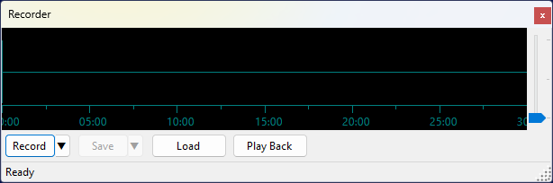
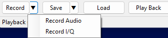
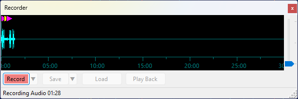
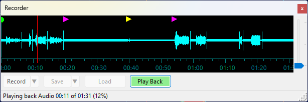
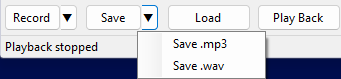

Recorder Panel
The Recorder panel records the received audio or I/Q signal and plays it back later. Up to 30 minutes of data can be stored in the recording buffer.

Recording
Click Record to start recording audio. To choose what to record, click the ▼ button next to Record:

- Record Audio — records the demodulated audio signal (mono);
- Record I/Q — records the complex baseband I/Q signal (stereo).
The button turns red and the status bar shows the recording type and elapsed time while recording is active. Click Record again to stop.

The waveform display shows the recorded signal growing from the left. The full 30-minute buffer width is always shown during recording, so the waveform expands to fill it as the recording progresses.
Event Markers
While recording is active, the panel automatically tracks changes in the selected satellite, transmitter, and mode, as well as QSOs saved in the QSO Entry panel. These events appear as colored markers along the top edge of the waveform:
- green circle — satellite selection changed;
- magenta triangle — transmitter selection changed;
- yellow triangle — demodulation mode changed;
- cyan square — QSO saved.
Move the mouse cursor over a marker to see a tooltip with the details of that event.
Playback
Click Play Back to play back the recording. The button turns green and a red vertical line moves across the waveform to show the current position. The status bar shows the elapsed time, total duration, and progress percentage.

Click anywhere on the waveform during playback to seek to that position.
Click Play Back again to stop playback.
Saving and Loading
Click Save to save the recording. To choose the file format, click the ▼ button next to Save:

- Save .mp3 — available for audio recordings only; saves a compressed MP3 file resampled to 16 kHz;
- Save .wav — saves a 48 kHz 32-bit float WAV file. Audio recordings are saved as mono; I/Q recordings are saved as stereo (left channel = I, right channel = Q).
Click Load to load a previously saved .wav or .mp3 file into the buffer for playback.
The Save and Load dialogs open in the Recordings subfolder of the data folder by default.
Playback Routing
During playback, audio is sent to the same soundcard that is selected in Settings for SDR audio output. Both audio and I/Q are also routed through the same output channel (VAC or UDP) that is configured for the Output Stream function in the Settings, so external applications can receive the played-back signal just as they would a live signal.
Waveform Display
The vertical gain slider on the right edge of the waveform adjusts the display amplitude in dB, making quiet signals easier to see. It does not affect the recording or playback level.